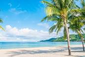
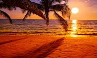

Beaches are also known for their natural beauty and wildlife.
The crashing waves stunning sunsets, and diverse marine life create a picturesque setting. Beaches are home to various plants and animals, such as:
- Seagulls
- Crabs
- Sand dunes vegetation

It's important to respect the environment and follow any guidelines or regulations in place to preserve the natural habitat
In addition to recreational activities, beaches often have amenities such as:
- Restrooms
- Showers
- Picnic areas
- Cafes or restaurants

Here are some things you can find or do at beach
- Sunbathe and relax on the sandy shore
- Take a refreshing swim in the ocean
- Build sandcastles or sculptures in the sand
- Play beach volleyball or frisbee with friends
- Enjoy a picnic with beach-friendly snacks
- Go for a walk or jog along the shore line
- Collect seashells and unique rocks
homepage